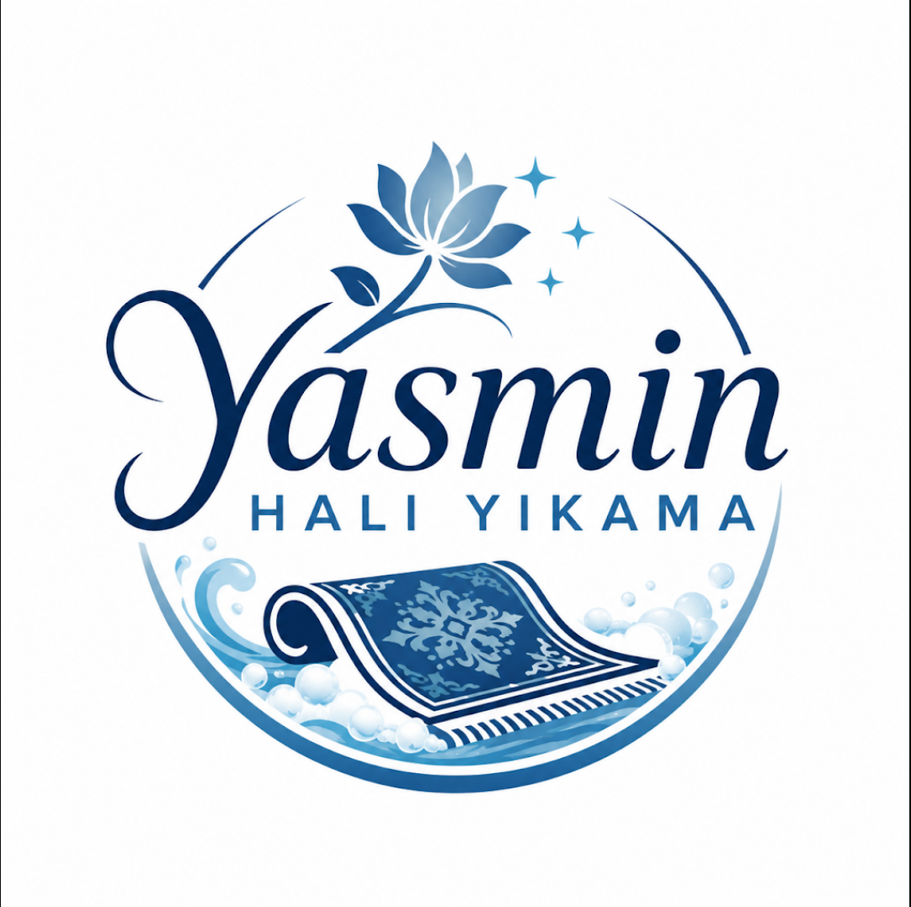
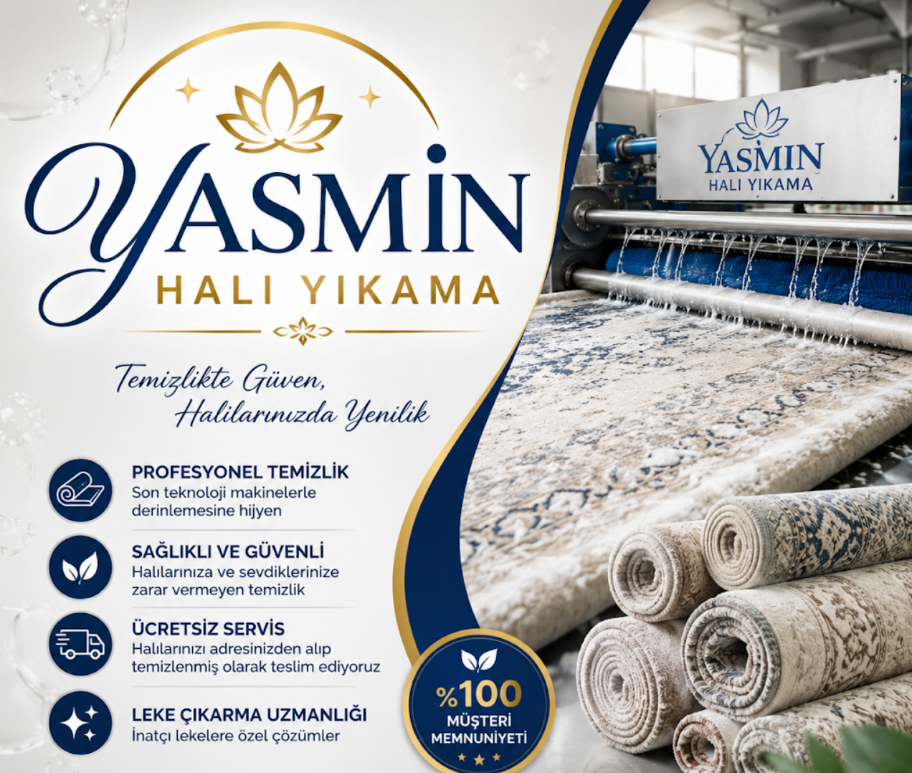

Yasmin Halı Yıkama olarak Zeytinburnu'nda profesyonel halı, koltuk, yorgan, battaniye ve stor perde yıkama hizmeti sunuyoruz.

Makine halısı, shaggy, yün ve el dokuma halılar.
Ev ve ofis koltukları profesyonel ekipmanlarla temizlenir.
Hijyenik ve derinlemesine temizlik.
Stor perdeleriniz zarar görmeden yıkanır.
Yasmin Halı Yıkama olarak müşteri memnuniyetini ön planda tutuyor, halılarınızı son teknoloji makineler ve profesyonel temizlik ürünleriyle ilk günkü temizliğine kavuşturuyoruz. Ücretsiz servisimiz sayesinde halılarınızı adresinizden teslim alıyor, özenle temizleyip zamanında teslim ediyoruz.
Halılarınızı adresinizden alıyor, temizleyip tekrar teslim ediyoruz.
Son teknoloji makineler ve kaliteli temizlik ürünleri kullanıyoruz.
Halılarınızı söz verdiğimiz tarihte eksiksiz teslim ediyoruz.
En büyük önceliğimiz memnuniyetinizdir.
"Halılarımız tertemiz geldi. Kesinlikle tavsiye ederim."
"Zamanında teslim ettiler. Çok memnun kaldık."
"İşçilik gerçekten harika."
Halılarınız ortalama 2-4 gün içerisinde temizlenerek adresinize teslim edilir.
Evet. Halılarınızı adresinizden ücretsiz alıyor ve ücretsiz teslim ediyoruz.
Makine halısı, yün halı, shaggy halı, el dokuma halılar ve daha birçok halı türünü profesyonel olarak temizliyoruz.
Evet. WhatsApp üzerinden bize yazarak hemen servis talebi oluşturabilirsiniz.